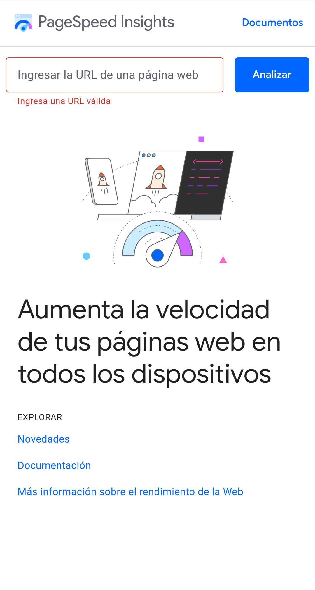
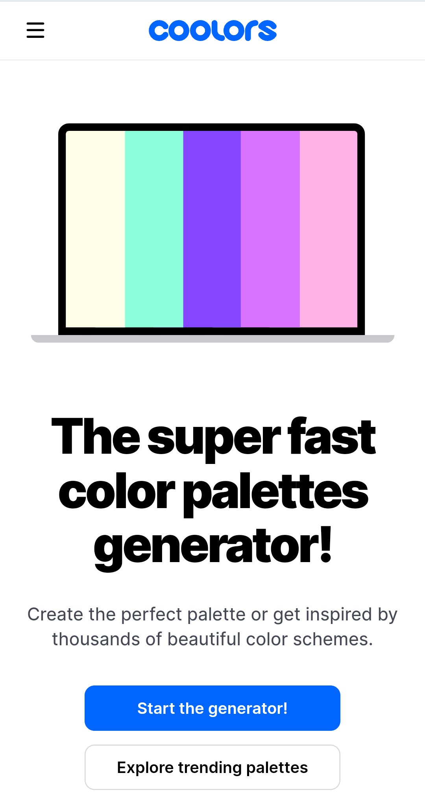

Hick's Law
PageSpeed Insights
pagespeed.web.dev
Hick's Law suggests that the time it takes for a person to make a decision increases with the number of choices they have.
I think this page exemplifies Hick's Law because of its simplicity in using it. It has a box to place a website URL and next to it a button to analyze it. And that's it!
The main function of the page is to analyze a website. Of course, there are more things to do if you continue researching and getting deeper into the web,
but by only showing the first box and button, it makes it easier to make decisions about what to do on the platform and how to do it.
White Space and Clean Design
Coolors
coolors.co
White space, or negative space, is the empty space between elements on a webpage. A clean design emphasizes simplicity and decluttering.
I think this home page exemplifies the principle of maintaining a clean design due to the large amount of white space, simple and friendly text, and few buttons.
In the header it has the drop-down menu button and the logo, then in the body it has an image, 2 texts of different hierarchy and finally 2 buttons.
This facilitates the speed and beauty with which I can navigate the website, leaving the rest of the screen blank to provide calm and simplicity to the user who is going to use it.
PARC: Contrast
Netflix
netflix.comContrast in design involves using differences in color, size, or other visual elements to make specific elements stand out.
I think this page works very well with contrast using striking and strong colors.
Red buttons on a black background are extremely powerful, and displaying text in white stands out excellently.
For an objective such as providing a movie and series service, it draws the attention of users and potential clients.